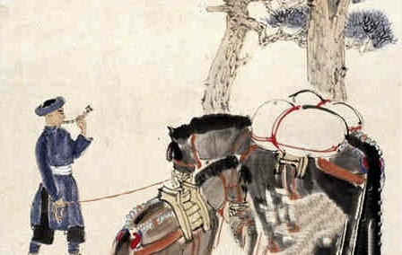

科普

九龙坡区走马镇民间故事
走马镇在明代中叶是古渝州、成都之间的重要驿道，走马场建立于明末清初并很快得以兴盛，其产生形成至少已有四五百年的历史。走马古镇曾是成渝古驿道的必经之地，南来北往的客商在走马古镇落脚歇息，在街道上、茶馆里人们聚在一起讲述天南海北的故事传说，相互交流异地的见闻趣事。
查看相关旅游线路走马镇在明代中叶是古渝州、成都之间的重要驿道，走马场建立于明末清初并很快得以兴盛，其产生形成至少已有四五百年的历史。走马古镇曾是成渝古驿道的必经之地，南来北往的客商在走马古镇落脚歇息，在街道上、茶馆里人们聚在一起讲述天南海北的故事传说，相互交流异地的见闻趣事。
查看相关旅游线路